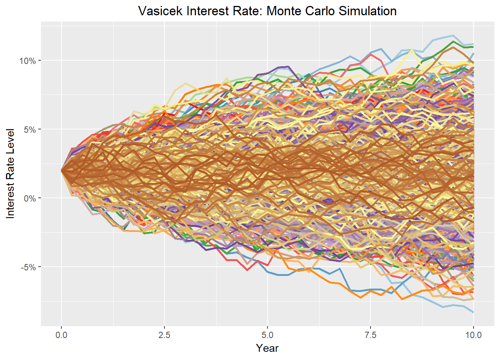

In this page we are going to calculate the PFE (Potential Future Exposure) and the EE (Expected Exposure) of an interest rate swap (IRS). An interest rate swap is a derivative contract where one part pays a floating interest rate, typically LIBOR, and receives a fixed interest rate. Since the future value of the swap is dependent on the floating interest rate, we will be modelling it with the Vasicek model. This model includes mean reversion.
library(tidyr)
library(ggplot2)
library(RColorBrewer)Consider a 10 years interest rate swap that pays a floating rate and receives a fix rate of 8% per annum with quarterly compounding.
r <- 0.02 # spot interest rate
a <- 0.1 # mean reversion velocity
b <- 0.02 # equilibrium
sigma <- 0.01 # volatility
swapRate <- 0.02 # swap rate
dt <- 90/360 # time steps
step <- 40 # number of steps
nsim <- 1000 # number of Monte Carlo simulation
time <- seq(from = 0, to = dt * step, by = dt)
set.seed(542)Under the Vasicek model, the process for \(r\) is given by the following formula:
\[dr = a(b - r)dt + \sigma dz\]
The discrete version of the model is given by:
\[dr = a(b - r)\Delta t + \sigma \epsilon \sqrt{\Delta t}\]
IR_model <- matrix(nrow = step + 1, ncol = nsim)
IR_model[1, 1:nsim] <- r
for (j in 1:nsim) {
for (i in 2:(step+1)) {
IR_model[i, j] <- IR_model[i - 1, j] + a * (b - r) * dt + rnorm(1) * sqrt(dt) * sigma
}
}
IR_model_df <- cbind(time, as.data.frame(IR_model))
colourCount = nsim
getPalette = colorRampPalette(brewer.pal(12, "Paired"))
IR_model_df %>%
gather(IR, Values, 2:(nsim+1)) %>%
ggplot(aes(x = time, y = Values, colour = IR)) +
geom_line(size = 1) +
scale_y_continuous("Interest Rate Level", labels = scales::percent) +
scale_x_continuous("Year") +
ggtitle("Vasicek Interest Rate: Monte Carlo Simulation") +
theme(legend.position="None", plot.title = element_text(hjust = 0.5)) +
scale_colour_manual(values = getPalette(colourCount))
#ts.plot(IR_model, gpars = list(col=rainbow(10)))Zero-coupon bond prices in Vasicek’s model are given by:
\[P(t,T) = A(t,T)e^{-B(t,T)r(t)}\] where
\[B(t,T) = \frac{1-e^{-a(T-t)}}{a}\]
and
\[A(t,T) = \exp{\bigg[\displaystyle\frac{(B(t,T)-T+t)(a^2b-\sigma^2/2)}{a^2}-\frac{\sigma^2B(t,T)^2}{4a}\bigg]}\]
B <- (1 - exp(-a * time[-1]))/a
A <- exp(((B - time[-1]) * (a^2 * b - sigma^2 / 2)) / a^2 - (sigma^2 * B^2 / (4 * a)))
fixed_leg <- matrix(nrow = step + 1, ncol = nsim)
floating_leg <- matrix(nrow = step + 1, ncol = nsim)
swapMtM <- matrix(nrow = step + 1, ncol = nsim)
for (j in 1:nsim) {
df_matrix <- matrix(nrow = step, ncol = step)
for (i in 1:step) {
df_length <- step - i + 1
df <- A[i] * exp(-B[i] * IR_model[1:df_length, j])
length(df) <- step
df_matrix[, i] <- df
}
df_sum <- apply(df_matrix, 1, sum, na.rm = TRUE)
fixed_leg[, j] <- c(swapRate * df_sum * dt, 0)
floating_leg[, j] <- c(1 - apply(df_matrix, 1, function(x) x[max(which(!is.na(x)))]), 0)
swapMtM[, j] <- fixed_leg[, j] - floating_leg[, j]
}
swapMtM_df <- cbind(time, as.data.frame(swapMtM))
colourCount = nsim
getPalette = colorRampPalette(brewer.pal(12, "Paired"))
swapMtM_df %>%
gather(Swap, Values, 2:(nsim+1)) %>%
ggplot(aes(x = time, y = Values, colour = Swap)) +
geom_line(size = 1) +
scale_y_continuous("Swap Value", labels = scales::percent) +
scale_x_continuous("Year") +
ggtitle("Interest Rate Swap: Monte Carlo Simulation") +
theme(legend.position="None", plot.title = element_text(hjust = 0.5)) +
scale_colour_manual(values = getPalette(colourCount))#ts.plot(swapMtM, gpars = list(col=rainbow(10)))EE <- apply(swapMtM, 1, function(x) sum(x[which(x>0)]) / nsim)
distrMat <- t(apply(swapMtM, 1, sort))
PFE <- distrMat[, nsim * 0.95]
Exposure_df <- as.data.frame(cbind(time, EE, PFE))
Exposure_df %>%
gather(ExposureType, Values, EE:PFE) %>%
ggplot(aes(x = time, y = Values, colour = ExposureType)) +
geom_line(size = 1) +
scale_y_continuous("Exposure", labels = scales::percent) +
scale_x_continuous("Year") +
ggtitle("Interest Rate Swap Exposure") +
theme(legend.position="None", plot.title = element_text(hjust = 0.5))